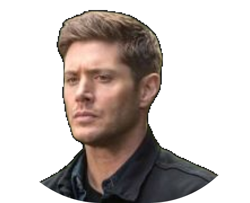
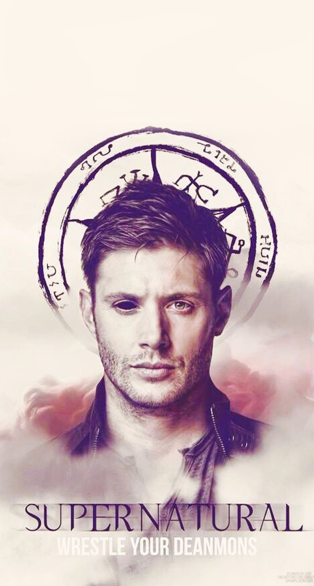

“Eu sei que é injusto. Mas há um modo natural
das coisas acontecerem, elas simplesmente tem
que acontecer, é uma reação em cadeia, se não
acontecer como deve acontecer, há um
desequilíbrio.”

Dean Winchester
24/01/1979
Caçador
Série: Supernatural
Dean é o irmão mais velho de Sam, herdeiros do sangue Whinchester e
Campbell, encontram em sí a obrigação de salvar o mundo de coisas e
seres sobrenaturais.